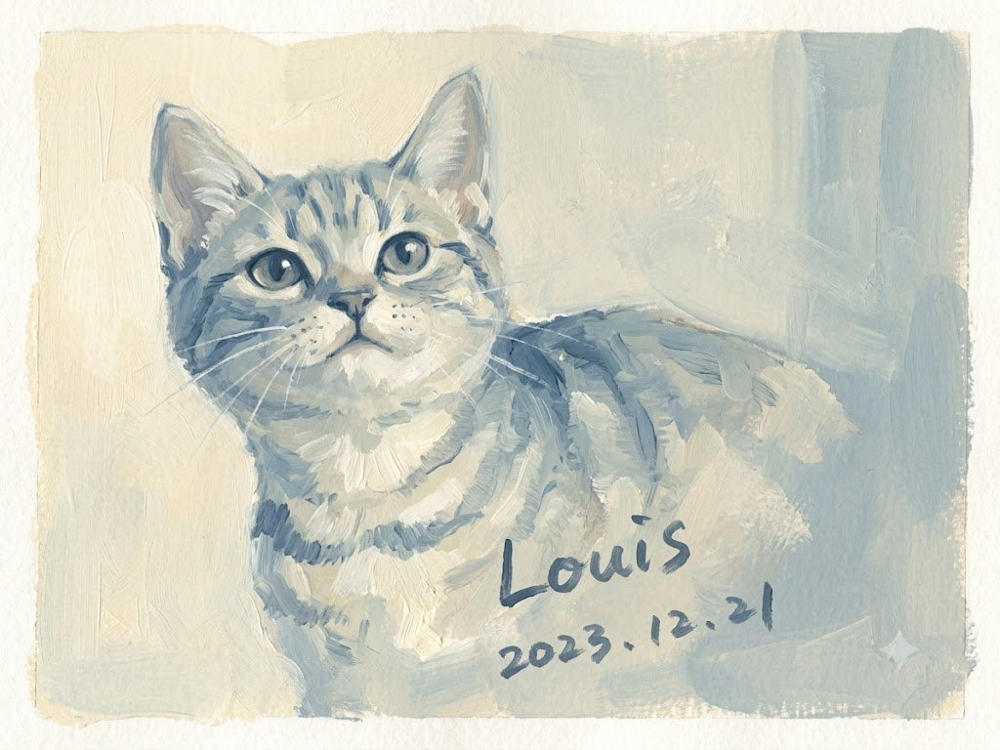
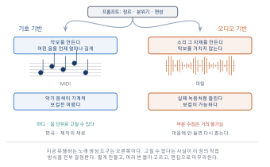
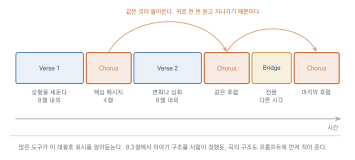

AI 음악과 사운드

이 장을 마치면
- 컴퓨터가 음악을 만들어 온 방식의 변화를 설명할 수 있다.
- 음악 생성 도구로 의도한 분위기의 곡을 만들 수 있다.
- 가사를 쓰고 보컬이 있는 곡을 완성할 수 있다.
- 영상 배경음악 등 용도에 맞는 음악을 제작할 수 있다.
- 생성한 음악의 저작권과 상업적 이용 조건을 판단할 수 있다.
음악은 전공자와 비전공자의 격차가 가장 컸던 분야다. 악기를 다루고 화성을 알아야 무언가를 만들 수 있었기 때문이다. 생성형 AI는 그 문턱을 거의 없앴다. 이 장에서는 음악을 만드는 방법과 함께, 만들어진 음악을 판단하는 최소한의 귀를 기르는 데도 지면을 쓴다.
10.1 컴퓨터는 어떻게 작곡하는가
음악은 이 책이 다루는 매체 가운데 전공자와 비전공자의 격차가 가장 컸던 분야다. 악기를 다루고 화성을 알아야 무언가를 만들 수 있었기 때문이다. 그 문턱이 거의 사라졌다. 다만 무엇이 되고 무엇이 안 되는지는 알아 두어야 한다.
규칙으로 음악 만들기
컴퓨터가 없던 시절에도 자동 작곡은 있었다. 18세기에 유행한 주사위 음악이 그렇다. 미리 작곡해 둔 마디 조각들을 번호로 정리해 두고, 주사위를 굴려 나온 수대로 이어 붙여 미뉴에트를 만드는 놀이였다. 모차르트의 이름으로 전해지는 악보가 유명하다.
20세기 들어 컴퓨터가 이 일을 이어받았다. 화성학의 규칙을 프로그램으로 적어 넣고, 그 규칙을 어기지 않는 음을 골라 나가는 방식이다. 2.1절에서 본 전문가 시스템의 음악판인 셈이다.
한계도 같았다. 규칙으로 적을 수 있는 것만 만들 수 있었다. 문법적으로 올바른 음악은 나왔지만, 좋은 음악은 좀처럼 나오지 않았다.
기호 기반과 오디오 기반
지금의 도구를 이해하려면 두 방식을 구분해야 한다.
기호 기반은 악보를 만든다. 어떤 음을 언제 얼마나 길게 연주할지의 목록을 생성하는 것이다. MIDI 파일이 그 결과다. 사람이 마디 단위로 고칠 수 있고, 악기를 바꿔 다시 연주시킬 수 있다.
오디오 기반은 소리 그 자체를 만든다. 악보를 거치지 않고 파형을 직접 생성한다. 지금 유행하는 노래 생성 도구들이 이쪽이다.
| 기호 기반 (악보) | 오디오 기반 (소리) | |
|---|---|---|
| 만드는 것 | 음의 목록 (MIDI) | 소리 파형 |
| 결과의 완성도 | 악기 음색이 기계적 | 실제 녹음처럼 들린다 |
| 수정 | 마디·음 단위로 자유롭게 | 거의 불가능 |
| 보컬 | 어렵다 | 가능하다 |
| 용도 | 편곡·제작의 재료 | 완성된 곡 |
표 10.1의 수정 행이 이 장 전체를 지배한다. 오디오 기반 도구는 완성된 곡을 내놓지만 두 번째 마디의 베이스만 바꾸는 일은 할 수 없다. 마음에 안 들면 다시 뽑는 수밖에 없다.

그림 10.1에서 두 갈래가 만들어 내는 것이 무엇인지 보자. 왼쪽은 연주하라는 지시를 만들고 오른쪽은 소리를 만든다. 고칠 수 있고 없고의 차이가 여기서 온다.
왜 지금은 오디오 기반인가
3장의 원리가 그대로 적용되기 때문이다. 소리 파형도 결국 숫자의 나열이고, 이미지에 쓰던 확산 모델과 언어 모델의 구조를 소리에 옮길 수 있다. 학습 데이터도 인터넷에 넘친다.
무엇보다 결과가 훨씬 그럴듯하다. 기호 기반으로 만든 곡은 악보는 그럴듯해도 연주가 기계적으로 들린다. 오디오 기반은 처음부터 녹음된 소리를 학습했으므로, 사람이 연주한 것 같은 질감이 그대로 나온다.
그래서 되는 것과 안 되는 것
1.3절의 매체별 정리를 여기서 자세히 본다.
| 잘되는 것 | 어려운 것 |
|---|---|
| 장르와 분위기 재현 | 곡 전체를 관통하는 주제의 발전 |
| 1–3분 길이의 완결된 곡 | 5분 이상의 구조적 전개 |
| 보컬이 있는 노래 | 특정 부분만 수정 |
| 악기 편성 지정 | 정확한 조성·박자 지정 |
| 영상용 배경음악 | 영상 길이에 정확히 맞추기 |
오른쪽 열의 항목들이 대부분 정밀한 통제에 관한 것이라는 점에 주목하자. 7장에서 이미지의 제어를 다뤘듯, 음악에서도 통제가 약점이다. 다만 이미지와 달리 음악에는 아직 인페인팅에 해당하는 기능이 충분히 발달하지 않았다.
그렇다면 어떻게 쓰는가
한계를 알고 나면 작업 방식이 정해진다.
짧게 만든다. 긴 곡을 한 번에 뽑으려 하지 말고, 짧은 곡을 여러 개 만들어 편집으로 잇는다. 11장의 영상 작업과 같은 전략이다.
여러 번 뽑아 고른다. 수정이 안 되므로 선별이 전부다. 6.2절의 흐름이 여기서도 그대로다.
편집으로 마무리한다. 길이 맞추기, 페이드, 반복 구간 만들기는 오디오 편집 도구에서 한다. 7.6절의 이미지 후반 작업과 같은 자리다.
연주할 악보가 필요한 경우도 있다. 이때는 기호 기반 도구를 찾거나, 생성한 오디오를 악보로 옮겨 주는 채보 도구를 쓴다. 정확도는 완벽하지 않지만 코드 진행 정도는 얻을 수 있다. 음악 전공자라면 이 조합이 유용하다. AI로 아이디어를 뽑고 자기가 편곡하는 방식이다.
10.2 음악 생성 도구 사용하기
이제 실제로 만들어 보자. 이미지 도구와 조작 방식이 비슷하지만, 결과를 귀로 확인해야 한다는 점이 다르다.
도구
가사와 장르를 주면 보컬이 있는 완성곡을 만들어 준다. 매일 일정량의 크레딧이 회복되는 방식이 일반적이며, 한 번 생성할 때 보통 두 곡이 나온다. 무료 플랜의 결과물은 상업적 이용이 제한되는 경우가 많으니 10.6절을 확인하고 쓰자.
생성한 구간의 앞뒤를 이어 확장하는 기능이 강하다. 짧게 만들어 이어 붙이는 10.1절의 전략에 잘 맞는다.
음성 합성과 효과음 도구. 10.5절에서 내레이션을 만들 때 쓴다. 월별 글자 수 한도가 있다. 목소리 복제 기능은 본인 동의가 있는 경우에만 쓴다(5.4절).
크레딧을 아끼는 요령
음악은 이미지보다 한 번의 생성 비용이 크다. 처음부터 계획을 세워야 한다.
- 프롬프트를 먼저 다듬는다. 대화형 AI에게 프롬프트를 검토받고 나서 생성한다.
- 짧게 만든다. 필요한 부분만 만들고 편집으로 늘린다.
- 한 번에 두 곡이 나온다면 둘 다 끝까지 들어 본다. 두 번째가 나은 경우가 많다.
- 쓸 만한 것은 즉시 내려받는다. 크레딧이 아깝다고 미루면 나중에 못 찾는다.
프롬프트 구성 요소
이미지의 다섯 축(4.2절)에 대응하는 것이 음악에도 있다.
| 요소 | 예 |
|---|---|
| 장르 | lo-fi hip hop, indie folk, city pop, ambient, orchestral |
| 분위기 | melancholic, warm, tense, playful, nostalgic |
| 악기 편성 | acoustic guitar, soft piano, brushed drums, no vocals |
| 템포 | slow, mid-tempo, 90 bpm, driving |
| 시대감 | 1980s synth, 1970s analog warmth, modern clean production |
| 음질·질감 | lo-fi, tape hiss, reverb-heavy, dry and close |
warm indie folk, nostalgic and slightly melancholic,
fingerpicked acoustic guitar with soft upright bass and brushed drums,
slow tempo around 80 bpm,
1970s analog warmth with subtle tape hiss,
no vocals, gentle and unobtrusive마지막 줄의 no vocals와 unobtrusive가 실무적으로 중요하다. 영상 배경음악이라면 보컬이 없어야 하고, 대사를 방해하지 않아야 한다. 10.4절에서 자세히 다룬다.
레퍼런스를 말로 옮기기
이런 느낌은 있는데 장르 이름을 모를 때가 있다. 이미지에서 쓴 방법(4.3절)이 여기서도 통한다.
내가 원하는 음악은 '늦은 밤 혼자 걷는 거리, 쓸쓸하지만 편안한 느낌'이야.
이런 느낌에 해당하는 음악 장르와 악기 편성, 템포를
음악 생성 프롬프트에 쓸 영어 용어로 정리해 줘.
서로 다른 방향으로 세 가지 안을 제시해 줘.세 가지 안을 받아 각각 생성해 보면, 자기가 원한 것이 어느 쪽인지 알게 된다. 말로는 구분되지 않던 것이 소리로는 분명해진다.
실존 아티스트의 이름을 프롬프트에 넣는 것은 5.3절의 논의가 그대로 적용된다. 많은 서비스가 이를 차단하고 있기도 하다. 이름 대신 특징(장르·편성·시대감·음질)으로 풀어 쓰자. 결과도 더 잘 통제된다.
듣고 고르는 훈련
이미지는 한눈에 비교되지만 음악은 그렇지 않다. 여러 곡을 제대로 비교하려면 방법이 필요하다.
프롬프트: ____________________
곡 A 첫인상: ______ 30초 이후: ______ 용도 적합성: ______
곡 B 첫인상: ______ 30초 이후: ______ 용도 적합성: ______
곡 C 첫인상: ______ 30초 이후: ______ 용도 적합성: ______
선택: ____ 이유: ____________________30초 이후를 따로 적는 이유가 있다. 음악 생성 결과는 앞부분이 좋다가 뒤로 갈수록 무너지는 경우가 흔하다. 첫인상만으로 고르면 나중에 곤란해진다.
이어 붙이고 확장하기
10.1절에서 말했듯 부분 수정은 어렵지만, 이어서 만드는 기능은 여러 도구가 지원한다.
- 앞으로 확장: 도입부를 추가한다
- 뒤로 확장: 곡을 늘리거나 마무리를 만든다
- 구간 재생성: 특정 부분부터 다시 만든다 (지원하는 도구가 있다)
이 기능들을 조합하면 짧은 조각들로 긴 곡을 조립할 수 있다. 다만 이어 붙인 자리가 어색해지기 쉬우므로, 오디오 편집 도구에서 크로스페이드로 다듬는 것이 보통이다.
안 될 때
| 증상 | 대처 |
|---|---|
| 뒤로 갈수록 무너진다 | 짧게 만들어 편집으로 잇는다 |
| 장르가 안 맞는다 | 장르명 대신 악기 편성과 템포로 지정 |
| 너무 화려하다 | minimal, sparse, few instruments 추가 |
| 보컬이 안 원하는데 들어온다 | instrumental, no vocals 명시 |
| 분위기가 밋밋하다 | 시대감·음질 어휘를 넣는다 |
| 같은 것만 반복된다 | 프롬프트를 크게 바꾸거나 도구를 바꾼다 |
10.3 가사 쓰기와 보컬
보컬이 있는 곡을 만들려면 가사가 필요하다. 8장에서 익힌 글쓰기 기법이 여기서 쓰이되, 노래에는 노래의 제약이 있다.
가사는 읽히는 글이 아니다
시와 가사는 다르다. 시는 눈으로 읽지만 가사는 귀로 한 번 듣고 지나간다. 그래서 다음이 달라진다.
- 되돌아갈 수 없다. 한 번에 이해되지 않으면 그냥 지나간다
- 반복이 필요하다. 후렴이 있는 이유다
- 소리가 뜻만큼 중요하다. 발음하기 좋은 말이 좋은 가사다
- 음절 수가 정해져 있다. 멜로디에 얹혀야 한다
구조를 먼저
8.3절에서 이야기 구조를 사람이 정하라고 했듯, 가사도 구조를 먼저 정한다.
[Verse 1] 상황을 세운다 8행 내외
[Chorus] 핵심 메시지, 반복 4행 내외
[Verse 2] 변화나 심화 8행 내외
[Chorus] 같은 후렴 반복
[Bridge] 전환, 다른 시각 4행 내외
[Chorus] 마지막 후렴
많은 도구가 이런 구조 표시를 대괄호로 인식한다. 프롬프트에 구조를 명시하면 그에 맞게 곡을 짜 준다. 그림 10.2에서 후렴이 세 번 같은 자리로 돌아오는 것을 보자. 가사에서 반복이 필요한 이유가 이 구조에 들어 있다.
아래 조건으로 가사를 써 줘. [Verse] [Chorus] 같은 구조 표시를 포함해서.
주제: 오래 다니던 작업실을 마지막으로 정리하는 날
관점: 1인칭, 담담하게. 슬프다는 말을 쓰지 말 것
구조: Verse 1 / Chorus / Verse 2 / Chorus / Bridge / Chorus
행당 음절: 8~10음절로 맞춰 줘
후렴: 4행, 마지막 행에 같은 말이 반복되게
한국어로 써 줘.슬프다는 말을 쓰지 말라는 제약이 중요하다. 8.6절의 감정 이름 부르기 징후가 가사에서 특히 심하게 나타나기 때문이다.
한국어 가사의 문제
한국어로 노래를 만들 때 자주 겪는 문제가 있다.
발음이 뭉개진다. 학습 데이터에 영어 노래가 훨씬 많아, 한국어 발음이 부정확하게 나오는 일이 잦다. 특히 받침이 많은 말, 된소리, 자음이 겹치는 부분이 그렇다.
음절 배분이 어긋난다. 한 음절에 한 글자가 얹혀야 하는데 두 글자가 뭉치거나 늘어난다.
대처는 이렇다.
- 발음하기 쉬운 말을 고른다. 받침이 적고 모음이 열린 말이 잘 나온다
- 짧은 행으로 쓴다. 긴 행일수록 어긋날 확률이 높다
- 여러 번 생성한다. 같은 가사도 발음이 매번 다르다
- 정 안 되면 영어로. 또는 인스트루멘털로 만들고 내레이션을 얹는다
발음이 어색한 것을 개성으로 넘기지 말자. 듣는 사람은 가사를 못 알아들으면 집중을 잃는다. 알아들을 수 없는 가사는 없는 것만 못하다.
보컬 스타일 지정
목소리의 성격도 프롬프트로 지정한다.
성별·음역 female vocal, male vocal, low register, high and airy
창법 soft breathy vocal, powerful belting, whispered, spoken word
분위기 warm, detached, intimate, raw
편성 solo vocal, layered harmonies, choir
처리 close-miked, reverb-heavy, doubledintimate와 close-miked를 함께 쓰면 귓가에서 부르는 듯한 느낌이 나고, reverb-heavy를 쓰면 넓은 공간감이 생긴다.
인스트루멘털 버전
영상 배경음악으로 쓰려면 보컬이 없는 편이 낫다. 두 가지 방법이 있다.
처음부터 없이 만든다. 프롬프트에 instrumental, no vocals를 넣는다. 가장 확실하다.
보컬을 분리한다. 만든 곡에서 보컬만 빼는 도구가 있다. 완벽하지 않지만 쓸 만한 결과가 나온다. 후렴만 남기고 절은 인스트루멘털로 쓰는 식의 편집도 가능하다.
11장의 영상 작업을 염두에 둔다면 같은 곡의 보컬 버전과 인스트루멘털 버전을 모두 만들어 두자. 영상에서 대사가 있는 구간에는 인스트루멘털을, 없는 구간에는 보컬을 쓰면 훨씬 짜임새 있다.
가사도 퇴고한다
8.6절의 일곱 징후가 가사에서도 나타난다. 특히 셋이 심하다.
감정 이름 부르기. 슬픈 마음, 그리운 너. 가사에서 가장 흔한 상투구다.
흔한 비유. 별이 되어, 바람처럼. 이미 노래에 수없이 쓰였다.
설명 과잉. 후렴에서 다 말해 놓고 브릿지에서 또 설명한다.
퇴고 방향도 같다. 빼는 쪽이다. 가사는 특히 그렇다. 짧고 반복되는 가사가 대개 더 잘 남는다.
10.4 용도별 음악 만들기
실제로 쓸 음악을 만든다. 이 절의 결과물 중 일부는 11장 영상 작업에서 그대로 쓰게 되므로, 미리 만들어 두자.
영상 배경음악
가장 자주 필요한 용도다. 좋은 배경음악의 조건은 눈에 띄지 않는 것이다.
- 보컬이 없어야 한다. 말과 겹치면 둘 다 안 들린다
- 중음역이 비어야 한다. 사람 목소리 대역을 음악이 차지하면 대사가 묻힌다
- 변화가 크지 않아야 한다. 갑자기 커지거나 악기가 바뀌면 시선을 뺏는다
- 반복해도 지루하지 않아야 한다
minimal ambient background music,
soft sustained pads and occasional piano notes,
very slow, no percussion, no vocals,
warm and unobtrusive, leaves space for narration,
consistent throughout with no dramatic changesleaves space for narration이 핵심이다. 대사가 들어갈 자리를 비워 달라는 요청이며, 실제로 결과에 영향을 준다.
길이 맞추기
영상이 47초인데 음악이 2분이라면 어떻게 할까. 음악을 잘라 쓰는 것이 정답이지만 요령이 필요하다.
1. 영상 길이를 먼저 확정한다
2. 음악을 그보다 길게 만든다 (여유 10초 이상)
3. 오디오 편집 도구에서
- 시작점을 영상에 맞춘다
- 끝에서 3~5초에 걸쳐 페이드아웃
4. 음악이 짧다면 중간 구간을 복사해 늘린 뒤 이어 붙인다
(크로스페이드로 이음새를 감춘다)페이드아웃 없이 음악이 뚝 끊기는 것이 아마추어 영상의 가장 흔한 표시다. 마지막 3초의 페이드 하나가 완성도를 크게 바꾼다.
루프 음악
게임이나 앱, 전시 영상처럼 계속 반복되는 음악이 필요할 때가 있다. 조건이 하나 더 붙는다. 끝과 처음이 자연스럽게 이어져야 한다.
- 짧게 만든다 (30초–1분)
- 마디 수가 딱 떨어지게 자른다 (8마디, 16마디)
- 시작과 끝의 음량과 악기 구성을 비슷하게 맞춘다
- 편집 도구에서 두 번 이어 붙여 들어 보고 이음새를 확인한다
시그널과 짧은 소리
브랜드 시그널은 3–5초짜리 짧은 음악이다. 영상의 시작이나 끝에 붙여 정체성을 만든다. 짧아서 생성 비용도 적다.
a 4-second sound logo,
three ascending marimba notes followed by a soft synth swell,
warm and friendly, clean production,
ends cleanly with no fadeends cleanly가 중요하다. 뒤에 다른 소리가 이어져야 하므로 잔향이 길면 곤란하다.
언제 생성하고 언제 기성 음원을 쓰는가
생성이 언제나 답은 아니다. 무료로 쓸 수 있는 음원 사이트가 많고, 품질이 좋은 경우도 많다.
| 생성이 나을 때 | 기성 음원이 나을 때 |
|---|---|
| 특정 분위기를 정확히 맞춰야 할 때 | 무난한 배경음악이면 될 때 |
| 가사가 내용과 관련되어야 할 때 | 시간이 없을 때 |
| 길이를 자유롭게 조절해야 할 때 | 상업적 이용이 확실해야 할 때 |
| 남들과 겹치면 안 될 때 | 음질이 확실히 보장되어야 할 때 |
세 번째 줄이 실무에서 중요하다. 10.6절에서 보겠지만 생성 음악의 상업적 이용은 조건이 복잡하다. 반면 잘 알려진 무료 음원 사이트는 이용 조건이 명확하다.
기성 음원을 쓸 때도 출처 표기 의무가 있는 경우가 많다. 무료가 아무 조건 없음을 뜻하지는 않는다. 내려받기 전에 라이선스를 확인하고, 표기가 필요하면 영상 설명에 넣는다.
11장을 위해 미리 만들기
11장에서 만들 짧은 영상에 쓸 음악을 지금 준비해 두자. 다음 셋이면 충분하다.
1. 메인 배경음악 90초 이상, 인스트루멘털, 잔잔하게
2. 같은 곡의 짧은 버전 20~30초 (도입부용)
3. 시그널 3~5초 (마무리용)
파일명 예: bgm_main.mp3 / bgm_short.mp3 / signature.mp3
저장 위치: 03_음악/1번과 2번을 같은 곡에서 만드는 것이 요령이다. 통일감이 생기고 크레딧도 아낀다.
10.5 사운드 이펙트와 음성
음악만 소리가 아니다. 효과음과 목소리도 영상의 완성도를 크게 좌우한다.
효과음
문 여는 소리, 발소리, 종이 넘기는 소리처럼 짧은 소리다. 텍스트로 생성하는 도구가 있고, 무료 효과음 사이트도 많다.
the sound of a paintbrush being placed on a wooden table,
close-miked, dry, no reverb, 2 seconds효과음 프롬프트의 요령은 소리가 나는 상황을 구체적으로 묘사하는 것이다. 붓 소리보다 나무 탁자에 붓을 내려놓는 소리가 훨씬 정확하게 나온다. 4.1절의 원칙이 여기서도 통한다.
효과음은 생각보다 큰 차이를 만든다. 영상에 아무 소리도 없으면 어색하고, 작은 효과음 하나가 들어가면 갑자기 실재감이 생긴다. 11장의 영상 작업에서 시간이 남는다면 여기에 쓰는 것이 가장 효율이 좋다.
음성 합성
음성 합성text-to-speech, TTS은 글을 읽어 주는 기술이다. 예전의 기계적인 목소리와 달리, 지금은 사람이 읽은 것과 구분하기 어려운 수준이다.
쓸 곳이 많다.
- 영상 내레이션
- 웹툰의 낭독 버전
- 발표 자료의 음성 해설
- 외국어 더빙
1. 읽을 원고를 준비한다 (구어체로, 문장은 짧게)
2. 목소리를 고른다 (성별, 나이대, 톤)
3. 속도와 억양을 조절한다
4. 생성 후 들어 보고 어색한 부분의 문장을 고친다
5. 오디오 편집에서 문장 사이 간격을 조절한다4번이 요령이다. 억양이 어색하면 설정을 바꾸기보다 원고를 고치는 편이 빠르다. 쉼표를 넣거나, 문장을 짧게 자르거나, 어려운 말을 쉬운 말로 바꾸면 대개 해결된다.
한국어 음성 합성의 현재
한국어 음성 합성은 상당히 발전했지만 아직 약점이 있다.
- 한자어와 외래어의 발음이 틀리는 경우가 있다
- 숫자와 단위 읽기가 어색할 때가 있다 (2024년 → 이공이사년)
- 억양이 평평하다. 강조가 필요한 곳에서 밋밋하다
- 긴 문장에서 호흡이 어색하다
대처는 원고 쪽에서 한다. 숫자는 한글로 풀어 쓰고(이천이십사 년), 문장을 짧게 자르고, 강조할 곳은 앞뒤에 쉼을 준다.
목소리 복제와 그 위험
기술적으로는 짧은 음성 몇 초로 그 사람의 목소리를 복제할 수 있다. 이 기능이 여러 서비스에 있다.
5.4절의 논의가 그대로 적용된다. 다시 강조한다.
다른 사람의 목소리를 동의 없이 복제하지 않는다. 초상권과 마찬가지로 음성에도 권리가 있으며, 이를 이용한 사기와 협박이 실제로 일어나고 있다. 실습에서는 자기 목소리나 서비스가 제공하는 가상 목소리만 쓴다.
가족이나 친구의 목소리로 장난치는 것도 하지 말자. 5.4절에서 말했듯 친한 사이라 괜찮다는 판단은 본인이 내릴 수 있는 것이 아니다.
자기 목소리를 복제하는 것은 유용할 수 있다. 긴 내레이션을 여러 번 녹음하는 대신 한 번 학습시켜 두고 원고만 바꾸면 되기 때문이다. 다만 그 음성 모델이 서비스에 남는다는 점, 그리고 나중에 자기 목소리가 어떻게 쓰일지 통제하기 어렵다는 점은 생각해 두자.
소리를 겹칠 때
영상에 음악·내레이션·효과음이 함께 들어가면 서로 방해한다. 기본 원칙이 있다.
내레이션 가장 크게 기준 음량
배경음악 내레이션의 20~30% 정도
효과음 상황에 따라, 순간적으로만 크게
내레이션이 나올 때는 배경음악을 더 낮춘다 (더킹)더킹은 말이 나올 때 음악이 자동으로 작아지는 기능이다. 무료 편집 도구에도 대개 있으니 찾아 쓰자. 없다면 손으로 음량 곡선을 그려도 된다.
소리 작업에서 초보자가 가장 자주 하는 실수는 배경음악이 너무 큰 것이다. 만드는 사람은 음악에 애착이 있어 크게 두고 싶어지지만, 듣는 사람에게는 방해가 된다. 의심스러우면 더 줄인다.
10.6 저작권과 상업적 이용
음악은 이미지보다 저작권 관리가 까다롭다. 플랫폼이 자동으로 검사하는 시스템이 있고, 걸리면 영상이 내려가거나 수익이 다른 사람에게 간다. 5장의 논의에 음악 고유의 문제를 더해 정리한다.
무료 플랜의 함정
가장 자주 걸리는 지점부터. 여러 음악 생성 서비스가 무료 플랜의 결과물에 대해 상업적 이용을 허용하지 않는다.
상업적의 범위가 생각보다 넓다는 점이 문제다.
| 대체로 괜찮다 | 확인이 필요하다 |
|---|---|
| 수업 과제 제출 | 수익 창출이 켜진 유튜브 채널 |
| 개인 소장 | 학과·기관의 공식 홍보물 |
| 비공개 포트폴리오 | 후원·광고가 붙는 게시물 |
| 교내 발표 | 외부 공모전 출품 |
표 10.6의 오른쪽 두 번째 줄에 주의하자. 학과 공식 계정에 올리는 홍보물은 수익이 나지 않아도 기관의 홍보 활동이므로 상업적 이용으로 해석될 수 있다. 9장의 웹툰이나 11장의 영상을 학과 계정에 올릴 계획이라면 미리 확인해야 한다.
약관에서 확인할 것
5.2절의 다섯 항목에 음악 고유의 것을 더한다.
□ 생성물의 권리가 누구에게 있는가
□ 무료 플랜에서 상업적 이용이 가능한가
□ 유료로 전환하면 과거에 만든 곡도 소급 적용되는가
□ 출처 표기 의무가 있는가
□ 서비스를 해지해도 만든 곡을 계속 쓸 수 있는가
□ 플랫폼에 업로드할 때 필요한 절차가 있는가세 번째 항목을 놓치기 쉽다. 무료로 만들어 둔 곡이 유료 전환 후에도 여전히 무료 조건에 묶이는 경우가 있다. 상업적으로 쓸 곡은 유료 전환 후에 만드는 편이 안전하다.
다섯 번째도 중요하다. 구독을 끊으면 만든 곡의 이용 권한이 사라지는 서비스가 있다.
플랫폼의 저작권 검출
유튜브를 비롯한 플랫폼은 업로드된 영상의 오디오를 데이터베이스와 대조한다. 기존 음원과 일치하면 자동으로 조치가 취해진다.
인공지능이 만든 음악에서 두 가지 상황이 생길 수 있다.
기존 곡과 유사해 걸리는 경우. 2.5절에서 본 과적합의 음악판이다. 학습 데이터의 특정 곡과 비슷한 결과가 나오면 검출될 수 있다.
다른 사람이 같은 곡을 등록한 경우. 드물지만, 비슷한 프롬프트로 만든 곡을 누군가 먼저 음원 등록해 두었다면 내 영상이 걸릴 수 있다.
1. 만든 곡을 음악 검색 앱에 들려준다 (기존 곡과 일치하는지)
2. 비공개로 먼저 업로드해 저작권 경고가 뜨는지 확인
3. 경고가 뜨면 그 곡을 쓰지 않는다 (이의 제기보다 다시 만드는 편이 빠르다)기존 곡을 재료로 쓰는 것
명확히 해 둘 것이 있다. 기존 곡을 참조로 넣어 비슷한 곡을 만드는 것은 여러 서비스가 금지하고 있고, 법적으로도 위험하다.
- 특정 가수의 목소리로 다른 노래를 부르게 하는 것 –– 5.4절의 음성권 문제
- 기존 곡을 업로드해 스타일을 학습시키는 것 –– 약관 위반인 경우가 많다
- 프롬프트에 곡 제목이나 가수 이름을 넣는 것 –– 대부분 차단되어 있다
10.2절에서 말했듯 이름 대신 특징으로 쓰는 것이 유일하게 안전한 길이다.
표기하기
5.6절의 원칙을 음악에 적용한다.
[영상 설명란]
음악: 생성형 AI 도구(Suno)로 제작
내레이션: 음성 합성(ElevenLabs), 원고는 저자 작성
효과음: [무료 음원 사이트명] (CC BY 4.0)
[기성 음원을 섞은 경우]
배경음악: "곡명" by 아티스트명 (출처, 라이선스)
추가 음악·효과음: AI 생성기성 음원을 함께 썼다면 그쪽 표기 의무를 반드시 지킨다. AI 생성분보다 이쪽이 법적으로 더 명확한 의무다.
정리
음악에서 지킬 것은 셋으로 줄일 수 있다.
- 공개하기 전에 약관을 확인한다. 특히 상업적 이용 조항.
- 기존 곡·가수를 참조로 쓰지 않는다. 이름 대신 특징으로.
- 업로드 전에 검출 여부를 확인한다. 비공개 업로드로 미리 본다.
이 셋만 지켜도 학기 중에 문제가 생길 일은 거의 없다. 부록 C의 체크리스트에도 포함되어 있다.
11주차 과제는 배경음악 만들기이며, 여기서 만든 음악을 12주차 영상에 쓴다.
실습 10-1. 여섯 요소로 프롬프트 짓기
10.2절의 여섯 요소를 모두 채워 프롬프트를 만들고 생성한다. 그다음 한 요소만 빼고 다시 생성해 무엇이 달라지는지 확인한다.
기준 프롬프트 (여섯 요소 모두):
______________________________________________
뺀 요소: ____________
빼고 나서 달라진 점: ____________________
가장 영향이 컸던 요소: ____________실습 10-2. 레퍼런스를 말로 옮기기
이런 느낌은 있는데 이름을 모르는 음악을 하나 떠올린다. 10.2절의 방식으로 세 가지 프롬프트 안을 받아 각각 생성하고 비교한다.
원하는 느낌(한국어로): ____________________
안 A: ____________________ 들은 인상: ____________
안 B: ____________________ 들은 인상: ____________
안 C: ____________________ 들은 인상: ____________
가장 가까운 것: ____ 왜: ____________________실습 10-3. 30초 이후를 듣기
같은 프롬프트로 네 곡을 만들고, 10.2절의 선별 기록표를 채운다. 반드시 끝까지 듣는다.
곡 A 첫인상 ____ 30초 이후 ____ 용도 적합 ____
곡 B 첫인상 ____ 30초 이후 ____ 용도 적합 ____
곡 C 첫인상 ____ 30초 이후 ____ 용도 적합 ____
곡 D 첫인상 ____ 30초 이후 ____ 용도 적합 ____
첫인상과 최종 선택이 달랐는가? □ 예 □ 아니오
달랐다면 왜: ____________________실습 10-4. 가사 쓰고 노래 만들기
자기 작업(9장 웹툰이나 관심 주제)과 관련된 가사를 쓰고 곡으로 만든다.
- 10.3절의 구조로 가사를 쓴다. 감정을 이름 붙여 말하지 않는다
- 8.6절의 일곱 징후로 가사를 퇴고한다
- 보컬 스타일을 지정해 생성한다
- 한국어 발음이 어색한 부분을 찾아 가사를 고치고 다시 생성한다
알아듣기 어려웠던 행: ____________________
원인 추정: □ 받침이 많음 □ 행이 김 □ 어려운 말 □ 기타
고친 뒤: ____________________
개선되었는가: □ 예 □ 아니오 □ 다른 곳이 어색해짐실습 10-5. 영상용 음악 세트 만들기 (11주차 과제)
10.4절의 세 곡을 만든다. 11장에서 그대로 쓸 것이므로 제대로 만들어 두자.
□ 1. 메인 배경음악 (90초 이상, 인스트루멘털)
- 보컬 없음 확인
- 중간에 큰 변화 없음 확인
- 대사가 들어갈 여지가 있는가
□ 2. 짧은 버전 (20~30초)
- 메인과 같은 곡에서 만들었는가
□ 3. 시그널 (3~5초)
- 끝이 깔끔하게 마무리되는가
파일명과 저장 위치를 규칙대로 정리했는가 □실습 10-6. 내레이션 만들기
10.5절의 방식으로 30초 내외의 내레이션을 만든다. 원고는 자기 작업 소개나 웹툰의 요약으로 한다.
원고 글자 수: ______ 실제 길이: ______초
어색했던 부분과 고친 방법
1. ____________________ → ____________________
2. ____________________ → ____________________
숫자·외래어 처리: ____________________
사용한 목소리 설정: ____________________설정을 바꾸기 전에 원고를 먼저 고쳤는가? 10.5절에서 말한 순서를 지켰는지 확인한다.
실습 10-7. 소리 겹쳐 보기
실습 10-5의 배경음악과 10-6의 내레이션을 겹친다. 오디오 편집 도구에서 음량을 조절하고, 다음 세 가지 상태를 만들어 비교한다.
A. 음악을 크게 (내레이션과 비슷하게)
B. 음악을 적당히 (내레이션의 30% 정도)
C. 음악을 아주 작게 (내레이션의 15% 정도)
옆 사람에게 셋을 들려주고 어느 것이 낫다고 하는지 기록:
______________________________________________
내가 만들면서 좋다고 생각한 것: ____
남이 고른 것: ____둘이 다르다면 10.5절 끝의 경고가 자기에게도 해당한 것이다.
실습 10-8. 약관 확인
10.6절의 확인표로 자기가 쓴 음악 서비스의 약관을 확인한다. 특히 학과 계정에 올려도 되는지를 판단한다.
서비스: ____________ 플랜: □ 무료 □ 유료
상업적 이용: □ 가능 □ 불가 □ 불명확
학과 공식 계정 게시: □ 가능 □ 불가 □ 확인 필요
근거가 된 약관 조항: ____________________
결론: ____________________10장 요약
- 규칙 기반 자동 작곡은 규칙으로 적을 수 있는 것만 만들 수 있었다. 2.1절의 전문가 시스템과 같은 한계다.
- 기호 기반(악보를 만든다)과 오디오 기반(소리를 직접 만든다)이 다르다. 지금의 도구는 오디오 기반이라 결과가 그럴듯한 대신 부분 수정이 거의 불가능하다.
- 그래서 작업 방식이 정해진다. 짧게 만들고, 여러 번 뽑아 고르고, 편집으로 마무리한다.
- 음악 프롬프트의 여섯 요소는 장르·분위기·악기 편성·템포·시대감·음질이다. 실존 아티스트 이름 대신 특징으로 쓴다(5.3절).
- 음악은 한 번의 생성 비용이 크므로 프롬프트를 먼저 다듬고, 쓸 만한 것은 즉시 내려받는다.
- 선별할 때 30초 이후를 반드시 듣는다. 앞부분은 좋다가 뒤로 갈수록 무너지는 결과가 흔하다.
- 가사는 시가 아니다. 한 번 듣고 지나가므로 반복이 필요하고, 소리가 뜻만큼 중요하며, 음절 수가 정해져 있다. 구조([Verse][Chorus])를 먼저 정한다.
- 한국어 가사는 발음이 뭉개지기 쉽다. 받침이 적고 열린 모음의 말을 고르고, 행을 짧게 하고, 여러 번 생성한다. 알아들을 수 없는 가사는 없는 것만 못하다.
- 영상 배경음악의 조건은 눈에 띄지 않는 것이다. 보컬 없이, 중음역을 비우고, 변화를 작게. 프롬프트에
leaves space for narration을 넣는다. - 페이드아웃 없이 음악이 뚝 끊기는 것이 아마추어 영상의 가장 흔한 표시다. 마지막 3초의 페이드가 완성도를 바꾼다.
- 생성이 언제나 답은 아니다. 무난한 배경음악이면 되거나 상업적 이용이 확실해야 할 때는 기성 무료 음원이 낫다. 다만 그쪽도 출처 표기 의무가 있다.
- 효과음은 생각보다 큰 차이를 만든다. 소리가 나는 상황을 구체적으로 묘사해 생성한다.
- 음성 합성에서 억양이 어색하면 설정보다 원고를 먼저 고친다. 숫자는 한글로 풀고 문장을 짧게 자른다.
- 다른 사람의 목소리를 동의 없이 복제하지 않는다. 5.4절의 원칙이 음성에도 그대로 적용되며 예외를 두지 않는다.
- 소리를 겹칠 때 초보자의 가장 흔한 실수는 배경음악이 너무 큰 것이다. 의심스러우면 더 줄인다.
- 무료 플랜의 결과물은 상업적 이용이 제한되는 경우가 많고, 상업적의 범위는 넓다. 학과 공식 계정 게시도 여기 해당할 수 있으니 미리 확인한다.
- 지킬 것 셋: 공개 전 약관 확인, 기존 곡·가수를 참조로 쓰지 않기, 업로드 전 검출 여부 확인(비공개 업로드로 미리 본다).
10장 연습문제
- ★ 기호 기반과 오디오 기반 음악 생성의 차이를 세 가지 항목으로 비교하시오.
- ★ 음악 프롬프트의 여섯 요소를 나열하고, 영상 배경음악을 만들 때 반드시 넣어야 할 지시를 두 가지 쓰시오.
- ★ 다음 중 상업적 이용으로 볼 가능성이 높은 것을 모두 고르시오.
- 수업 과제로 제출하는 영상
- 학과 공식 인스타그램에 올리는 홍보 영상
- 수익 창출이 켜진 개인 유튜브 채널
- 개인 컴퓨터에만 보관하는 습작
- ★★ 오디오 기반 도구에서 두 번째 마디의 베이스만 바꾸는 일이 왜 어려운지 10.1절의 개념으로 설명하고, 실무에서 이를 어떻게 우회하는지 쓰시오.
- ★★ 음악 선별에서 30초 이후를 반드시 들으라고 하는 이유를 설명하시오.
- ★★ 한국어 가사의 발음이 뭉개지는 이유를 3.1절의 개념과 연결해 설명하고, 원고 쪽에서 할 수 있는 대처를 세 가지 쓰시오.
- ★★ 배경음악·내레이션·효과음을 함께 쓸 때의 음량 기준을 쓰고, 더킹이 무엇이며 왜 필요한지 설명하시오.
- ★★★ 자기가 만든 곡 중 하나를 골라, 그 곡을 학과 공식 계정에 올려도 되는지 판단하시오. 판단에는 (1) 해당 서비스 약관의 근거 조항, (2) 상업적 이용 여부에 대한 자기 해석, (3) 판단이 애매할 때의 대안이 포함되어야 한다.
- ★★★ 실습 10-7의 음량 비교에서 자기 선택과 남의 선택이 달랐다면 그 이유를 분석하시오. 같았다면, 만든 사람이 배경음악을 크게 두고 싶어 하는 심리적 이유를 서술하시오.
- ★★★ 8.6절의 일곱 징후 중 가사에서 특히 자주 나타나는 셋을 들고, 자기가 쓴 가사에서 해당 사례를 찾아 고친 과정을 제출하시오.